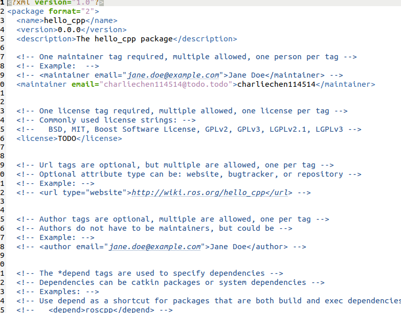
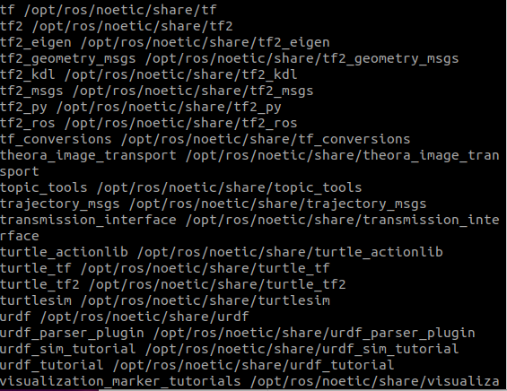
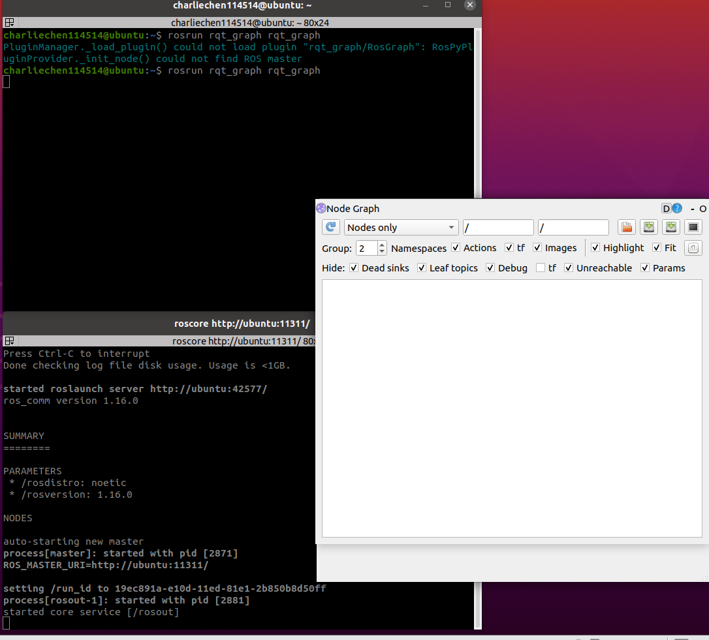

ROS 正式开发 2
ROS架构
现在我们开始讲解ROS的架构
设计者
ROS的设计者将ROS表述为“ROS = Plumbing + Tools + Capabilities + Ecosystem”
Plumbing 是通讯机制（实现ROS不同节点）
Tools 是工具软件包（ROS开发和调试工具）
Capabilities 机器人高层技能（导航）
EcoSystem 机器人生态
维护角度
main:核心部分
universe: 一些扩展的代码
系统架构
ROS可以有三层
（1）OS层 ，也就是经典操作系统 ，ROS是一个元操作系统
（2）中间层：封装了一些机器人开发的中间件
如：基于TCP/UDP 继续封装的TCPROS/UDPROS系统
（3）应用层
自身结构
文件系统：ROS文件系统指的是硬盘上面查看ROS源代码的组织形式。
计算图： 不同进程需要的进行数据交互。计算图可以良好的表现他们的作用关系
开源社区：略
ROS文件系统

如上图，这就是一个ROS的文件结构。

下面详细重点的介绍如下的文件
package.xml
这个文件是自动生成的，他在这里：

是的，就在SRC文件夹下面
打开看看，就会发现这里有软件包名称，版本号，作者，维护者以及其他信息。

这里可以查看依赖。
CmakeLists.txt
隔壁就是CmakeLists.txt。大量的对象我们用到再说，先不说过多！
ROS文件系统的相关命令
下面我们来看一些常见的指令：
增
catkin_create_pkg 自定义的包名 依赖的包 == 创建新的ROS功能包
sudo apt install xxx ==安装ROS功能包 （后期经常用）
删
sudo apt purge xxx == 删除功能包
查
rospack list == 列出所有的功能包
rospack find 包名 == 查询寻包名是否存在，存在返回安装路径
roscd 包名 == 进入摸一个包
rosis 包名 == 列出包下的文件
apt search xxx == 搜索包
改
rosed 包名 文件名 === 修改功能包文件
执行
roscore === 是ROS系统先决条件和程序的集合，必须先启动ROScore
roscore
//
roscore -p xxxx # 指定端口
启动发现产生了大量的信息，这是熟知英文就可以读懂了，以及这个

这个是输出日志的Linux地址，可以查看这里。
rosrun 包名 可执行文件名 === 运行指定的ROS节点 尝试一下：（rospack list）

cd 一下
在全网搜寻一下：
apt search ros-noetic-*
当然，这不好，我们grep检索一下、
apt search ros-noetic-* | grep -i gmapping
计算图
下面要说的是显示个节点关系的一个有效的动态展示图，他就是rqt_graph，用来展示错综复杂的节点关系！
安装
直接先跑一下这个玩意
rosrun rqt_graph rqt_graph 如果告诉你没安装，装一下就好了：
sudo apt install ros-<distro>-rqt
sudo apt install ros-<distro>-rqt-common-plugins
-<distro>-用ROS你自己安装的版本替代！
注意开的时候先把环境给开了！
然后，启动一下我们之前写的Launch脚本，这样，再次运行rosrun rqt_graph rqt_graph ：

好了，基础的ROS认识就到这里，之后我们开始讲授核心！ROS的通讯机制！